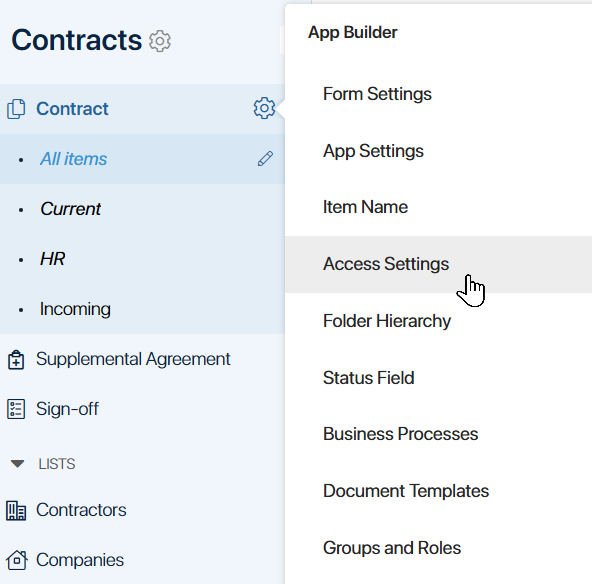
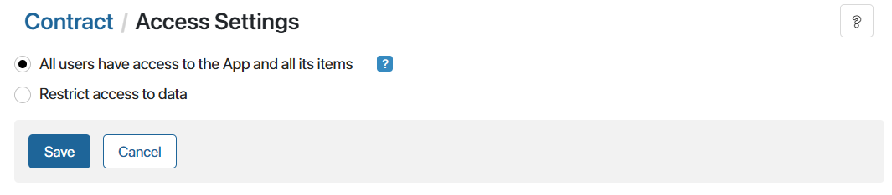

In BRIX, you can set up flexible access permissions for data stored in apps.
Depending on employees’ positions or roles, they can have different types of access permissions to app data. For example, a sales manager can create, edit, or delete items in the Deals app, whereas a sales rep can only view them.
начало внимание
Only users included in the Administrators group can grant or restrict access in app settings.
конец внимание
Configure access
Please note that employees regularly working with an app should be granted access to the workspace it belongs to and to the app itself. Then they will be able to see all app items they have access to by opening the app in the left menu.
If an employee needs one-time access to a specific app item, for example, within a business process task, they don’t need access to the workspace and app. The employee will be able to open the app item page using a direct link, for example, from the task.
To manage access to app data:
- Click the
 icon to the right of the app name and select Access Settings.
icon to the right of the app name and select Access Settings.

- The Access Settings page will open. The default option is All users have access to the App and all its items. This means that all users can:
- Create, view, edit, and delete app items.
- See folders of the folder hierarchy configured in the app and items included in them.
- Export and import app data.

- If you wish to configure access to app data for specific employees, select Restrict access to data.
Restrict access
When the Restrict access to data option is enabled, you can select users and specify which actions they are allowed to perform with app items.

You can restrict access to app data by selecting one of the following options:
- Restrict access to app. The most general option. The access permissions that you set up will be applied to all items in the app.
Use this option if all data in the app can be available to all employees working with it. You can configure permissions based on the employee’s position. For example, all HR department employees can view job openings, but only the manager can create, edit, and delete them.
- Restrict access to app folders. If folder hierarchy is enabled in the app, you can configure different access settings for different app folders.
Use this option if different employees should have access to data from different folders. For example, there can be two folders in the Job Openings app: for management positions and other employees. Only the HR department manager works with the first folder, while the second one is available to all HR department employees.
- Restrict access to app items. The most specific option. You can configure permissions individually for each app item and grant access to different users.
Use this option when you need to set up specific permissions for each app item. For example, each sales rep in the sales department may only have access to the contracts they work with. Data from contracts is considered confidential and cannot be shown to any other employees. You can grant permission to view and edit a contract to its Author and employees specified on the contract page as the Superior and the Approver.
Please note that you can grant temporary additional permissions to specific app items to let users complete one-time tasks. This can be done:
- On app item pages.
- In business process settings.
The following options are available for each type of restriction:
- Enable permission inheritance based on org chart subordination. The option is enabled by default and allows all higher-ranking managers specified in the organizational chart to have the same access to the app, its folders, and items as is granted to a subordinate.
If your company’s regulations require that employees work with confidential information to which third-party access must be restricted, disable this option. After that, supervisors will not have the same access rights as those granted to a subordinate.
- If access is denied, hide the list of users who can provide access rights. By default, an employee without access rights sees a list of users with the privilege of granting rights when trying to open the page of an app item. To hide the list, enable this option.
Read more about different cases of restricting access to app data in Combinations of access permissions.
Types of access permissions
You can grant the following permissions to users:
- View/Read. The users can view and download the app item.
- Create. The users can create new app items.
- Edit. The users can edit previously created app items and rename them. For Document type apps, users will be able to add file versions, and retrieve approval sheets from the archive.
- Delete. The users can delete app items.
- Assign Permissions. The users can grant and restrict additional permissions to specific app items, as well as grant permissions to view an item when the user is mentioned in the associated activity stream. This option is not available for the Restrict access to app items option.
- Process Management. The users can interrupt business processes, view task pages, and reassign tasks.
- Export. The users can export app items that they can view. This option is not available for specific app folders.
- Import. The users can import data to the app. This option is not available for specific app folders.
- Full Access. All the actions mentioned above are allowed.
Found a typo? Select it and press Ctrl+Enter to send us feedback